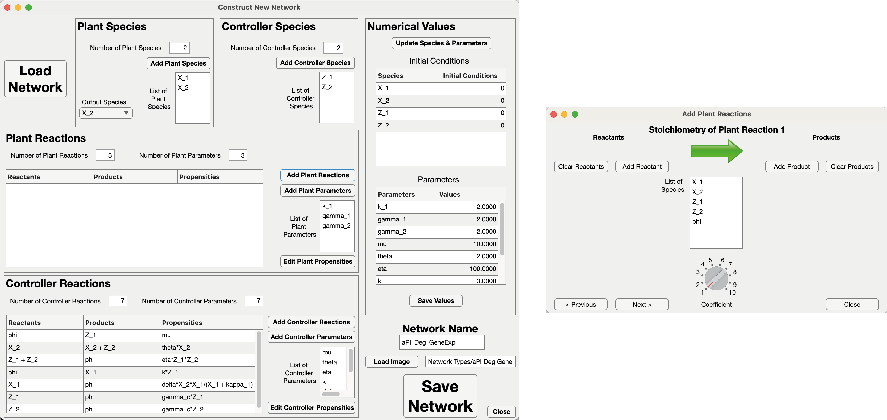

Biomolecular Controllers App
This app enables you to simulate the dynamics of biomolecular feedback networks using a friendly graphical user interface. You can inject disturbances or adjust the setpoints. Additionally, it facilitates of tuning the biomolecular parameters through knobs. You can do simulations in the deterministic and stochastic settings.
The app has 12 built-in networks to simulate, but you can create your feedback networks from scratch using a graphical user interface.  |